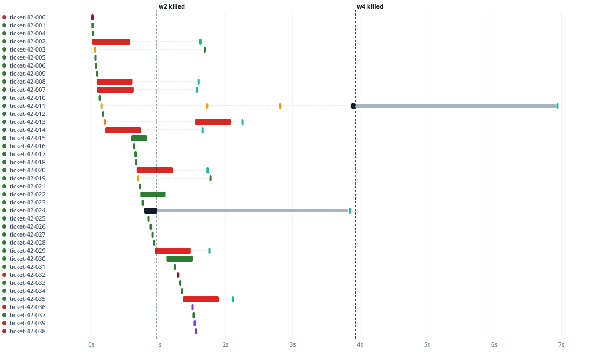

Open-source demo · AI background jobs
No lost jobs. No surprise bills.
Before
Random failures,
surprise bill
→
After
Safe retries,
budget checked first

reply, paid
timeout
rate limit or server error, retried
refused, not retried
worker killed
job held, then taken back
stored reply, not paid again
Recorded chaos run with a fake, unreliable AI provider: workers killed mid-call, nothing paid twice